El artesano mezcla la cantidad perfecta de ingredientes y cuece el pan usando la temperatura idónea del horno para crear un producto crujiente y tierno. Algunas variedades de pan artesano tienen un sabor ligero y dedicado, mientras que otros pueden tener un sabor más pronunciado. Esto depende de los ingredientes y técnicas de preparación usadas.
Bienvenido a nuestra sección de productos
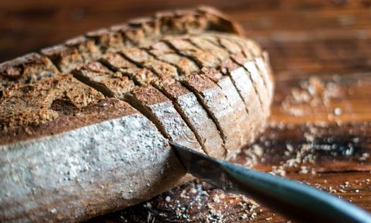
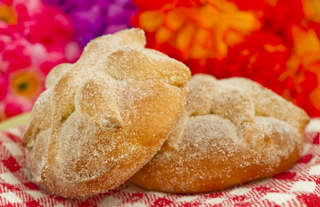
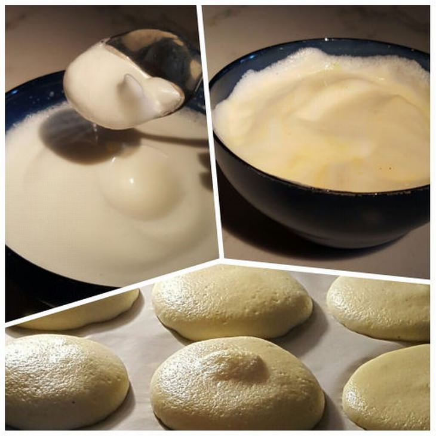
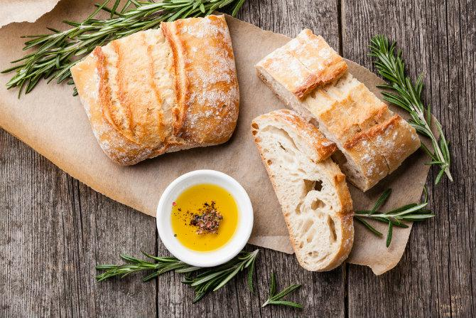

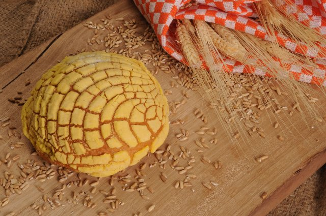

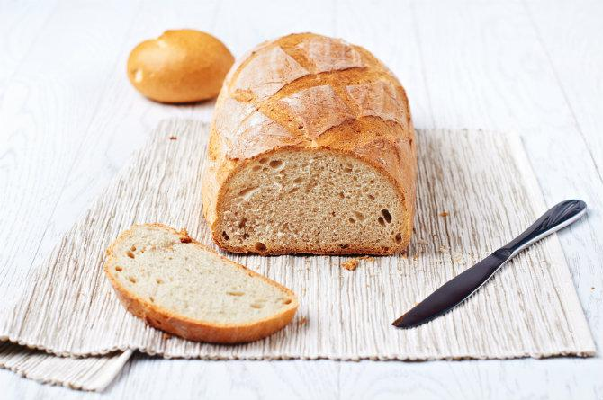

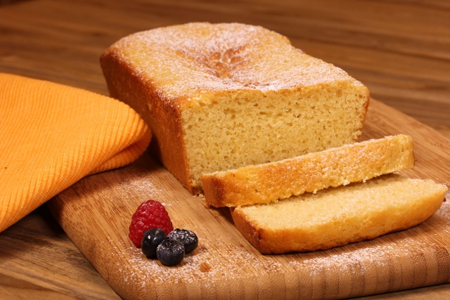
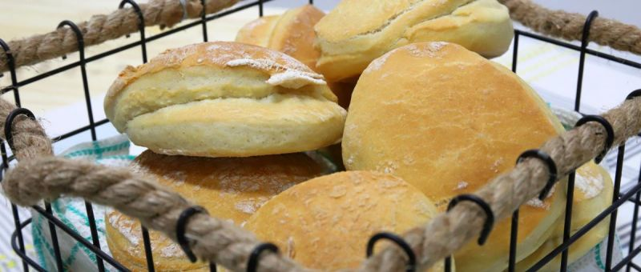

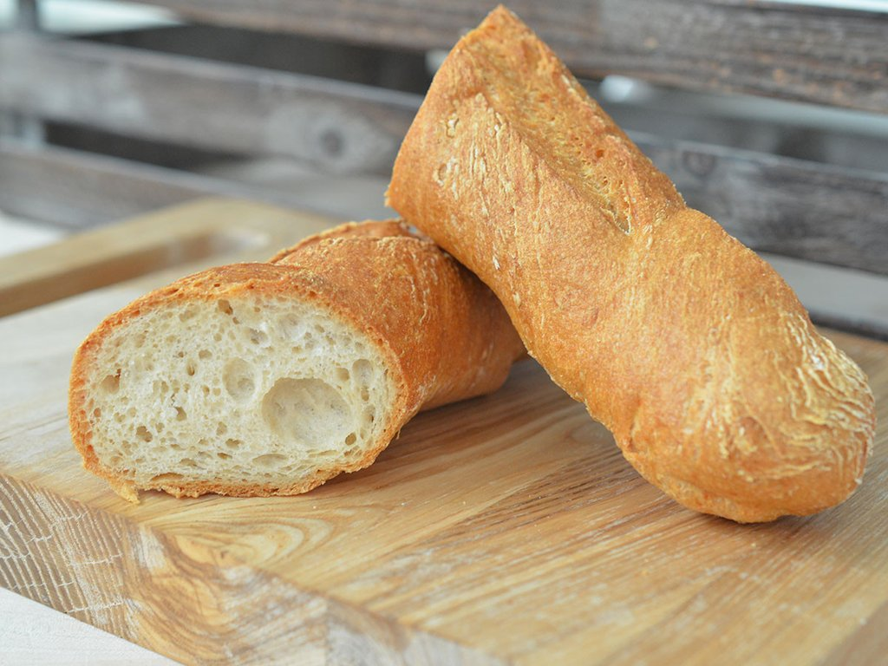
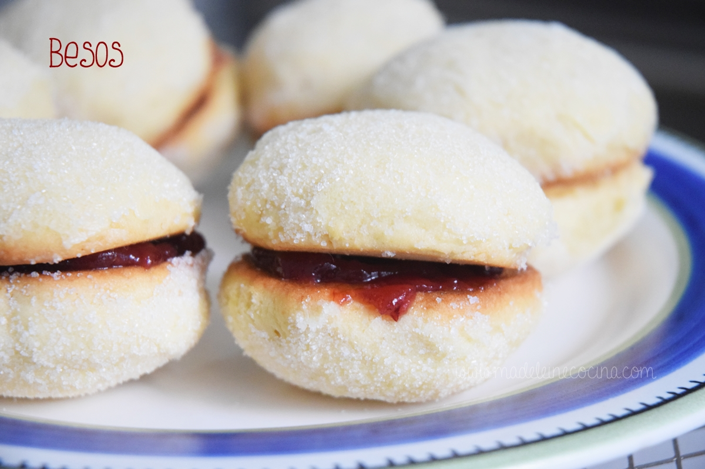
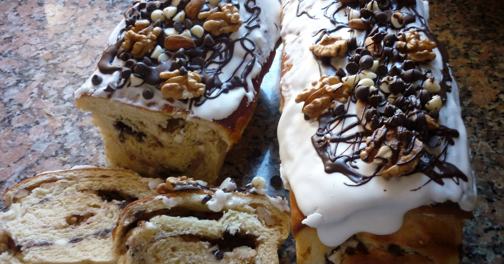
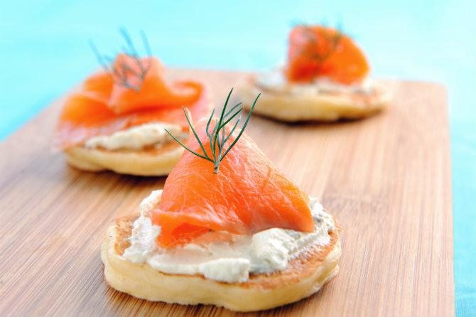
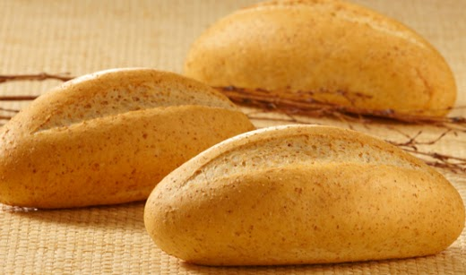
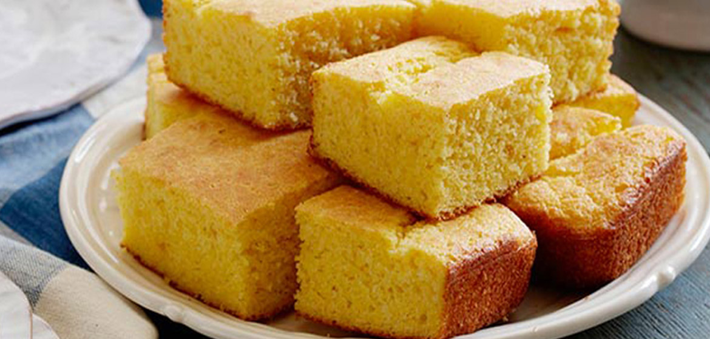
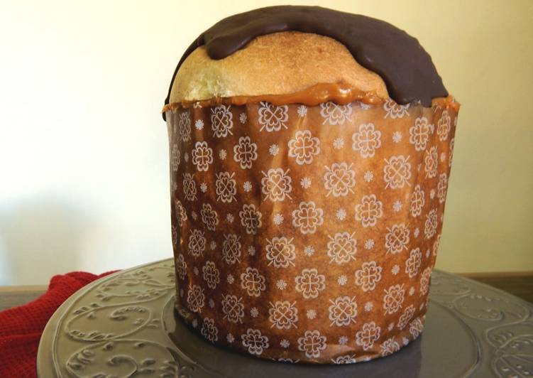
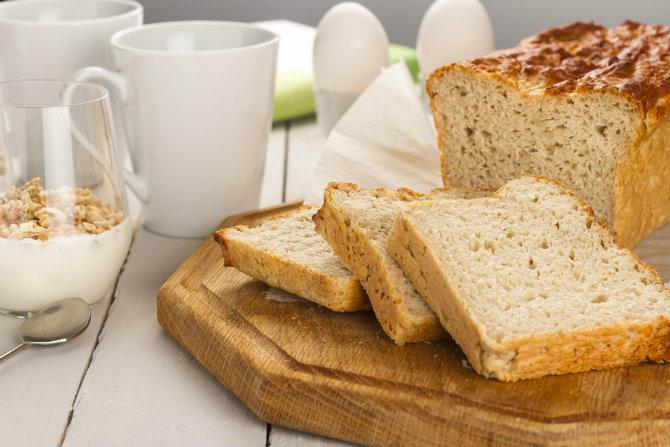
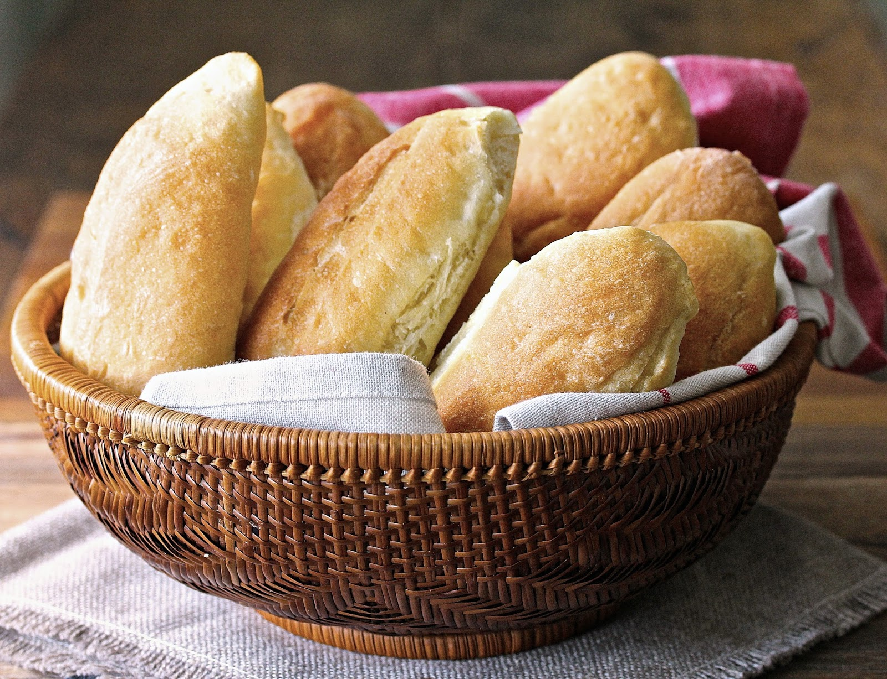
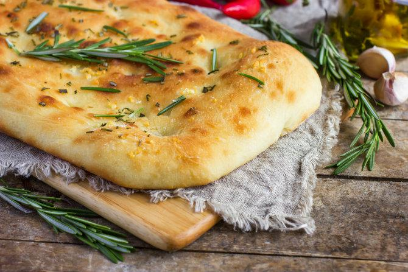
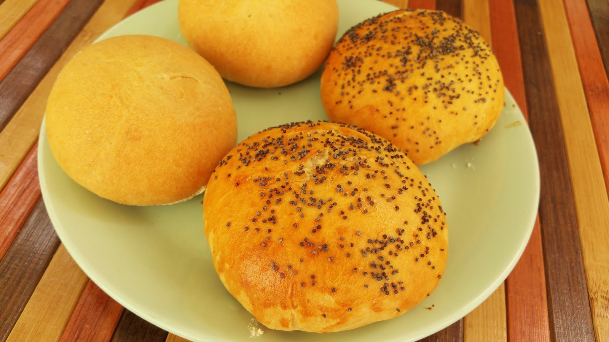
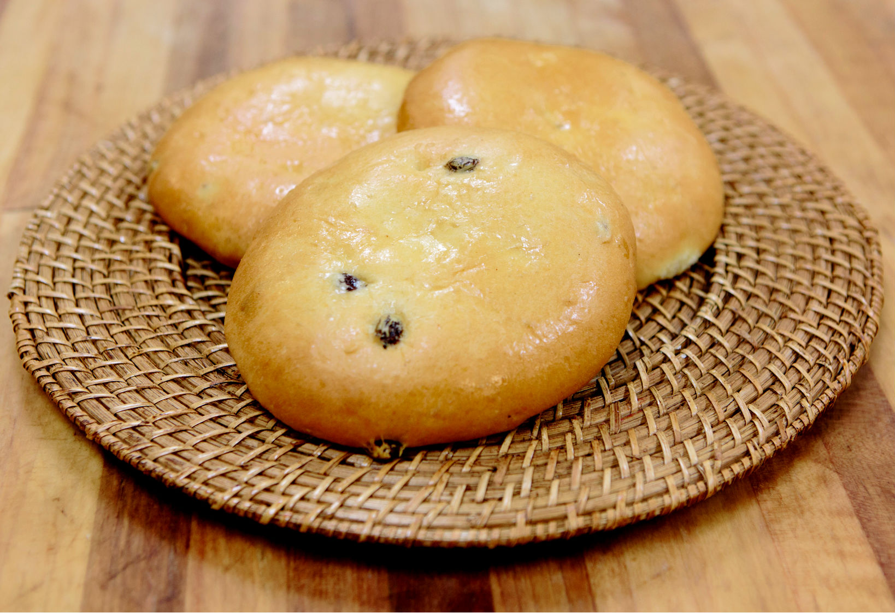
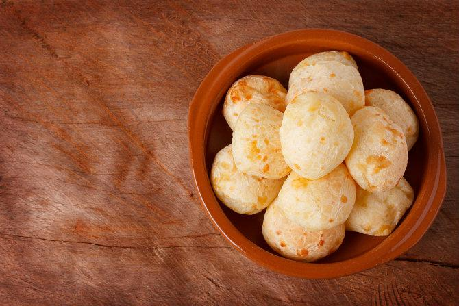
El pan representa un cadáver, la bolita que se encuentra en la parte superior es un cráneo y las cuatro canillas son los huesos del cuerpo que señalan las direcciones del universo. Pueden ser azucarados, espolvoreados con ajonjolí, azucarado de la Mixteca (le confiere un color rojo), con ralladura de naranja o vainilla, entre otras variantes dependiendo de la región donde se fabrique.
Ingredientes
500 grs harina de pastel de vainilla
3 huevos
1/2 taza leche
1/2 taza agua
1/3 de taza de aceite
6 mazapanes grandes
Pasos
Revolver la harina con el mazapán
Echar la harina en un bol y poner el huevo, la leche y agua, y aceite
Batir todo muy bien
Y engrasar el molde y agregar la mezcla
Meter al horno a 180 grados por 45 minutos y depende de cada horno, introduce un palillo si sale limpio ya está listo
Armar una corona con la masa de 400 g de la segunda mezcla, colocar una cucharada de polvo de leudar, una de aceite común, una taza chica de agua, una pizca de sal y una cucharadita de gel de mandioca. Luego, añadir de forma envolvente 2 claras batidas a punto nieve con una cucharada de azúcar.
Con una masa muy ligera y esponjosa a base de harina de trigo, sal y levadura, se cuece al horno una porción cilíndrica con algunos cortes en la parte superior que da lugar a la barra de pan común o pistola que podemos encontrar en cualquier tienda. La masa se ha dejado reposar y crecer y posteriormente crecerá más en el horno. Es muy barato y rápido de producir, por eso es tan popular.
Este producto es de los favoritos por las familias mexicanas, para cualquier tarde acompañado de un café o vaso de leche. Este bollo de pan dulce es elaborado de harina de trigo, agua o leche, azúcar, mantequilla, huevos, levadura y sal. Tiene una cubierta de pasta de azúcar, que está hecha de harina, azúcar y manteca. En ocasiones la cubierta puede ser de chocolate o de vainilla.
Este pan es especial, para cualquier persona que no quiere o no puede consumir harina de trigo. Especial para acompañar el desayuno o la merienda.
Unir 100 ml de crema de leche, 2 yemas, una cucharadita de polvo de leudar, otra de sal, 2 cucharadas de queso rallado y 60 g de la primera mezcla. Luego, agregarle 5 claras batidas a punto nieve con una cucharada de azúcar. Colocar la masa en una budinera enmantecada y lllevar al horno por 25 minutos. ¡Para chuparse los dedos!
Es un pan con forma de donut (con agujero enmedio) cuya tradición procede del Este de Europa, donde era muy común en las casas judías. Antes de cocer estos panes, se les suele poner peso encima durante un rato para que no crezcan demasiado durante la cocción. Se suelen utilizar muchos tipos de harina, aunque la que más es la harina de trigo blanca normal o la integral. Algunos bagels son planos y otros tienen muchos añadidos, como trocitos de cebolla, ajo, frutas, verduras, semillas, hierbas, especias o sal gorda.
Al hervir la leche recién ordeñada, se crea en la parte superior una película gruesa y amarilla que recibe el nombre de nata. Con la nata se elabora uno de los panes más tradicionales de México, y que por su consistencia suave y su azúcar glas espolvoreada se disfruta más con café de olla.
*Ingredientes*
Masa de pan dulce🍞
Relleno:
250 grs. De quinotos en almíbar cortados por la mitad
250 grs. De mamon en almíbar cortados en trocitos
200 grs. De nueces
Cobertura de dulce de leche🥞🍯
*Pasos*
Una vez que levo la masa, desgasificarla y añadirle los dulces y las nueces.
Amasar bien, formar bollos y ponerlos en los moldes. Dejar levar hasta que triplique su volumen.
Cocinar en horno a 180° entre 30 y 40 minutos.
En un bol, unir 25 g de levadura fresca diluida en agua tibia, 20 g de manteca blanca, una pizca de sal y otra de azúcar con un chorro de agua gasificada y 300 ml de agua tibia. Amasar bien y dejar que el bollo repose en un lugar cálido por 40 minutos. Cocinar en horno precalentado a 200° hasta que se dore.
La baguette es un tipo de barra de pan con levadura procedente de Francia. El nombre significa algo así como “pequeño bastón”, por su forma. Con este nombre se conocen varios panes que tienen en común esta forma, pero que pueden proceder de distintas zonas. La masa de la baguette francesa se suele hacer con harina de trigo y tiene una miga esponjosa y elástica cubierta de una corteza fina, tostada y crujiente. Con esta misma masa se hacen otros panes con formas diferentes.
Recibe su nombre porque las dos partes que componen al pan se unen por medio de una mermelada, simulando un beso. La masa horneada se revuelve en crema y azúcar. La mermelada varía de acuerdo al lugar donde se elabore pero tradicionalmente es de fresa y suele espolvorearse con ralladura de coco.
Ingredientes
Masa de pan dulce o el que ustedes quieran, Relleno para el pan dulce arrollado, 5 cdas cacao amargo, 100 gr manteca derretida, 2 cdas miel, 2 yemas, Dulce de leche repostero c/n
Pasos
Hacer la masa del pan dulce mientras leva el bollo hacer el relleno, mezclar la manteca derretida con la miel.
Agregar las yemas mezclar e incorporar el cacao amargo.
Mezclar bien enfriar en la heladera mientras leva el bollo de masa, luego desgasificar el bollo estirar con las manos en forma rectangular y untar con el relleno de cacao.
Disolver medio sobre de levadura en 50 ml de leche tibia y agregarle un poco de harina. Sumar 2 yemas, una cucharadita de aceite de maíz, una de azúcar, una de sal, 30 g de manteca derretida fría, 100 ml de leche, 125 de la primera mezcla y 2 claras batidas a nieve.
Dejar la preparación en la heladera por una hora y luego cocinar en una sartén como los panqueques o waffles. ¡Quedan deliciosos como canapés!
Es un pan suizo muy parecido a los panes blancos francés y alemán. Tiene forma de baguette pero con algunos cortes horizontales por la parte superior. La corteza es más gruesa y tostada. Se usa igual que el francés o el alemán, como pan para bocadillos, para tostar, como tostadas, etc. También se sirve con vino o aceite de oliva.
En la cultura Maya, el hombre y la mujer fueron hechos del maíz. Antes de la conquista se elaboraban tortitas de maíz para ofrendar a los dioses. Es con la llegada de los españoles que arriba el trigo y con su siembra se proliferan las recetas que se mezclaron con los ingredientes de las regiones. Este pan se elabora con maíz criollo, sus granos son perfectamente molidos aunque suelen encontrarse granos enteros esparcidos por el panque. Tiene leche condensada, vainilla y en ocasiones canela.
Cada vez que se acerca el calor pensamos en hacer este postre. Además de ser la mejor versión de pan de dulce para las temperaturas que manejamos en el hemisferio sur durante navidad, te hace quedar como un campeón con todos los que lo prueban y hasta le sacás una sonrisa a la abuela antes del brindis.
Por un lado, disolver una cucharadita de miel, una cucharada de aceite neutro y 2 claras en 350 ml de agua. Por otro, juntar 500 g de la primera mezcla con un sobre de levadura seca, 2 cucharadas de queso rallado y una cucharadita de sal. Colocar ambas preparaciones en una batidora y batir por 5 minutos.
Para que leude, colocar la masa en una budinera enmantecada y ponerla en una bolsa por 45 minutos. Procurá que esté cerca de una estufa o sobre el horno todavía caliente. Luego cocinar durante 30 minutos y... ¡listo!
Pan mexicano hecho con una masa básica muy parecida a la de las baguettes francesa. El pan tiene una corteza blanda y con mucho sabor. Los bolillos se usan mucho para hacer tortas con aguacate, frijoles, jalapeños, lechuga, tomate y cebolla. Hay muchas versiones de este sandwich.
Es una especie de cuerno espolvoreado con azúcar. Recibe el popular nombre de bigote porque al morderlo se te impregna la azúcar dejando la forma de un bigote dulce. Pueden estar rellenos de cajeta, chocolate o sin relleno.
Batir durante 5 minutos 500 g de la primera mezcla, 2 claras, 1 sobre de levadura seca disuelta en 360 ml de agua tibia, una cucharada de sal, 2 de queso rallado, 50 g de aceitunas negras sin carozo y 50 g de tomates secos hidratados en juliana.
Colocar en un molde rectangular y dejar leudar durante una hora preferentemente en un lugar cálido. Hundir los dedos en algunos lugares de la masa, espolvorear con sal gruesa, aceite de oliva y ramas de romero. Dorar en un horno precalentado a 180°. ¡Y a comer!
Es un tipo de pan redondo muy esponjoso con la corteza casi tan tierna como la miga y que se usa para hacer hamburguesas. Se suele vender ya preparado y con semillas de sésamo por encima. Se prepara con harina de trigo blanca.
Este pan tiene origen en Saltillo. Y se creó por la necesidad de crear un producto que ayudará a mantener el frío a raya, esto gracias a las calorías que aporta. Está hecho a base de trigo y de pulque, este último ingrediente es útil como conservador natural. Se se le agrega azúcar, piloncillo y canela.
Unir 500 g de fécula de mandioca con 10 g de polvo de leudar, 150 g de queso por salut, 150 g de queso tipo Mar del Plata, 2 huevos, 100g de manteca derretida, 200 ml de leche y 1 cucharada de sal. Dejar descansar 10 minutos, hacer bollitos y cocinar en un horno a 180 ° por 20 minutos.
Si sos una celíaca de buen comer, como yo, te recomiendo acompañarlos con una feta de jamón crudo y un poco de orégano o romero en la prepación. ¡Deliciosos!